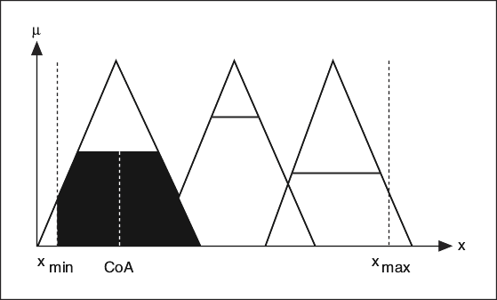
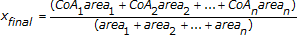

In the Center of Sums (CoS) defuzzification method, the fuzzy logic controller first calculates the geometric center of area for each membership function, as shown in the following image.

The fuzzy controller then uses the following equation to calculate a weighted average of the geometric center of area for all membership functions.

where CoAn is the geometric center of area of the scaled membership function n, and arean is the area of the scaled membership function n.